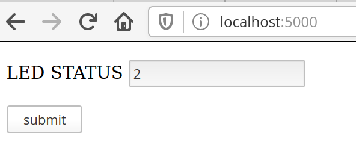

LAB - RTOS - WIFI

Neste laboratório iremos modificar o exemplo RTOS-WIFI, que realiza uma requisição GET em um webserver (Flask) rodando em seu computador, onde o mesmo após receber essa requisição retorna um dado JSON.
Lab
| Exemplo base | LAB | |
|---|---|---|
/Comunicacao/RTOS-WIFI-WINC1500-get-EXT1 |
----> | Lab-10-RTOS-WIFI |
Data LIMITE para entrega: 20/11/2023 |
Código exemplo
- Atualizar o repositório do SAME70-Examples
- Vamos modificar o código exemplo
Comunicacao/RTOS-WIFI-WINC1500-get-RTOS-EXT1, faça uma cópia do seu lab para a nova pasta no seu repositórioLab-9-RTOS-WIFI
IoT
IoT (Internet of Things) é um conceito que tem como objetivo a conexão entre objetos e a internet, ela faz parte da revolução da Industria 4.0 e está cada vez mais presentes em nossas vidas. Desenvolver sistemas embarcados muitas vezes envolvem conectar esses sistemas na internet, e isso pode se dar atráves de diversos meios:
- Cabo de rede (Ethernet)
- Conexão WIFI
- 3G/4G/GSM
- Sistemas de comunicação de baixa energia:
- LoRa/ ...
- Sistema de comunicação proprietário
- AM/FM/...
Para cada aplicação existe uma forma de comunicação ideal, e vocês como engenheiros de computação devem estar cientes dessas formas e saber interagir com elas.
Nesse laboratório iremos explorar um pouco a comunicação WIFI em sistemas embarcados, para isso iremos conectar um módulo externo a nossa placa que servirá como 'placa de rede' do nosso microcontrolador, esse módulo é o WINC 1500.
Warning
Ao desenvolver sistemas IoT você é responsável pela segurança dos dados que estão sendo enviados/recebidos. E não só na ponta do embarcado, como também no armazenamento de dados no servidor.
- https://www.iotforall.com/5-worst-iot-hacking-vulnerabilities/
- https://observer.com/2015/07/eight-internet-of-things-security-fails/
- https://medium.com/iot-security-review/5-internet-of-things-security-fails-fae2fb2bb871
- https://securityintelligence.com/organizations-continue-to-fail-at-iot-security-and-the-consequences-are-growing/
WINC1500
Existem inúmeros módulos WIFI para serem utilizados em sistemas embarcados, você pode comprar microcontroladores que possuem toda a parte WIFI integrada no chip (exemplo: STM32), nesses casos não é necessário conectar um módulo externo, tudo está integrado no chip (tirando a antena)!
O módulo que iremos utilizar é desenvolvido pela Microchip e chama Winc1500
Esse módulo possui comunicação SPI (similar a UART, porém desenvolvida para comunicação entre chips) que será usada como interface de controle do uC para enviar/ receber um dado wifi, temos que nos comunicar com esse módulo. Essa parte está feita nos exemplos fornecidos, e é chamada de comunicação M2M: Machine-to-Machine.
Exemplo
Esse laboratório faz uso do exemplo disponível no repositório SAME70-Examples/RTOS/WIFI-WINC1500-get-RTOS-EXT1 que possui duas partes:
python-server: servidor em flask que possui um forms e uma página de status que retorna um valor em jsonWIFI-RTOS-get: firmware a ser executado na nossa placa.
python-server
Acesse a pasta python-server que contém o script server.py, instale o flask via pip e execute o programa:
pip install -r requirements.txt --user
python server.py --host=0.0.0.0
O resultado esperado deve ser o seguinte:
➜ python-server git:(master) ✗ python server.py
* Serving Flask app "server" (lazy loading)
* Environment: production
WARNING: This is a development server. Do not use it in a production deployment.
Use a production WSGI server instead.
* Debug mode: on
* Running on http://0.0.0.0:5000/ (Press CTRL+C to quit)
* Restarting with stat
* Debugger is active!
* Debugger PIN: 278-674-158
O servidor em Flask é simples e permite que alteremos uma variável led via um form e lermos o status via um get:
| http://localhost:5000 | http://localhost:5000/status |
|  |  |
{kind=link}
Preparando o WebServer
Para validar, conecte seu celular na mesma rede WIFi e acesse o ip da sua máquina na porta 5000 e valide se o webserver está funcionando.
Info
Deixe o servidor rodando, vamos fazer o embarcado se conectar nele.
Tip
Para descobrir seu IP abra outro terminal e execute o comando ipconfig, nos exemplos iremos usar: http://192.168.0.138:5000, mas você deve adequar o IP ao seu.
Anote o seu IP, iremos usar mais para frente
Se não funcionar, talvez seja necessário desativar o firewall do windows:
Lembre de ativar novamente após a atividade.
Tarefas
WIFI-RTOS-get
Vamos agora explorar e executar o nosso firmware.
Conectando o hardware
Conecte o módulo WINC1500 no EXT-1 do kit de desenvolvimento.
| Diagrama | Conexão |
|---|---|
 |
 |
Entendendo o firmware
Vamos relembrar um pouco de camada física e Tecweb agora, toda vez que você acessa uma página da internet um socket é criado, este socket é um canal de comunicação TCP/UDP entre dois pontos via comunicação internet. Uma vez estabelecido o socket o client (no nosso caso o embarcado) pode fazer uma requisição (get) ou um envio de informação (post). Nesse exemplo iremos fazer um get no servidor que está rodando no seu computador.
{kind=link}
Nosso firmware irá seguindo os seguintes passos a seguir:
-
WIFI (camadas:
network accesseinternet)- Conecta no roteador
- Busca IP no DCHP
-
Socket (camadas:
applicationetransport)- Cria novo socket
- Realiza get
- Lê ack
- Lê mensagem
tasks
O firmware exemplo possui duas tarefas: task_wifi e task_process, a primeira é responsável por realizar toda a comunicação com o módulo WINC1500 e fazer a inicialização da comunicação socket com o webserver em Python, a segunda é responsável por gerenciar as mensagens que serão enviadas para o servidor.

A task_wifi gerencia alguns callbacks de software, que são eventos gerados do módulo WIFI, existem vários callbacks que podem ser utilizados, nesse exemplo usamos:
wifi_cb: callback de eventos relacionado a camada física do WIFI ( conexão, ssid list, ...)resolve_cb: callback relacionado a resolução de nome no DNS, se quisermos acessar um HOST_NAME e não um ip (google.com -> 10.21.3.12).socket_cb: eventos de socket (conexão/ nova mensagem/ erro/ ...)
A task_process aguarda um socket ter sido criado na task_wifi e quando isso for verdadeiro faz um envio de um comando do tipo get e aguarda por dois pacotes de retorno, o ack e a msg, que contém o payload requisitado (no nosso caso um json).
Essa tarefa foi implementada com a máquina de estados a seguir em mente, usando o operador switch case
enum states {
WAIT = 0,
GET,
ACK,
MSG,
TIMEOUT,
DONE,
};
{kind=link}
Lab
Info
Abra o projeto no Atmel Studio
Vamos agora começar o lab para valer, primeiro vamos executar o exemplo. Mas para isso é necessários configurarmos o módulo WIFI para acessar a rede que está disponível da sua casa.
Preparando o firmware
Devemos configurar o main.h do exemplo adicionando as informações do roteador na qual ele deve se conectar, edite o arquivo com as configurações da sua rede:
A configuração da rede:
/** Wi-Fi Settings */
#define MAIN_WLAN_SSID "Corsi" /**< Destination SSID */
#define MAIN_WLAN_PSK "corsiEmarco" /**< Password for Destination SSID */
IP e porta do servidor (seu computador):
#define MAIN_SERVER_PORT 5000
#define MAIN_SERVER_NAME "192.168.42.42"
Warning
- O sistema embarcado e o webserver devem estar na mesma rede!
- O modulo winc1500 só se conecta em rede de 2.4Ghz
- Sugestão: faça seu celular virar um acesspoint, conecte o embarcado e o computador nele!
Tarefa
- Conecte o WINC1500 no EXT1
- Adicione informações do SSID da sua rede
- Modifique o IP do servidor com o IP da sua máquina
- Programe o uC
Resultados esperados
Terminal Window (Atmel Studio):
{kind=link}
Terminal do flask:
192.168.0.107 - - [26/May/2020 16:51:07] "GET /status HTTP/1.1" 200 -
192.168.0.107 - - [26/May/2020 16:51:17] "GET /status HTTP/1.1" 200 -
Breve descrição do funcionamento
Nosso embarcado envia uma requisição GET através do MAIN_PREFIX_BUFFER definido dentro do main.h:
/** Send buffer of TCP socket. */
#define MAIN_PREFIX_BUFFER "GET /status HTTP/1.1\r\n Accept: */*\r\n\r\n"
Nosso webserver (Flask) recebe essa requisição e verifica o que foi recebido, nesse caso ele recebe o "/status" após o GET e responde com o seguinte JSON {led' : '1'}:
@app.route('/status', methods = ['POST', 'GET'])
def status():
global led
if request.method == 'POST':
status = request.form
led = status['LED']
return render_template("status.html", status = status)
else:
return jsonify({'led' : led}), 200
Acionando LED conforme led:status
Vamos agora acionar o LED da placa conforme o status recebido no comando get, se valor igual a 0 apagamos o LED da placa e se valor igual a 1 acendemos o LED da placa.
Warning
Você deve inicializar o pino do LED da placa como saída! Isso não está feito.
Para isso, será necessário realizar o parse da mensagem HTML que é enviada pelo servidor, isso deve ser feito dentro da task_process. Lembre que nessa tarefa implementamos uma máquina de estados, e é no estado msg que possuímos a mensagem com o status do nosso LED.
case msg
case MSG:
printf("STATE: MSG \n");
memset(g_receivedBuffer, 0, MAIN_WIFI_M2M_BUFFER_SIZE);
recv(tcp_client_socket, &g_receivedBuffer[0], MAIN_WIFI_M2M_BUFFER_SIZE, 0);
if(xQueueReceive(xQueueMsg, &p_recvMsg, 5000) == pdTRUE){
printf(STRING_LINE);
printf(p_recvMsg->pu8Buffer);
printf(STRING_EOL); printf(STRING_LINE);
state = DONE;
}
else {
state = TIMEOUT;
};
break;
A mensagem com o conteúdo (head + json) é salva no buffer p_recvMsg->pu8Buffer).
Exemplo do conteúdo do buffer
Content-Type: application/json
Content-Length: 15
Server: Werkzeug/1.0.1 Python/3.6.9
Date: Tue, 26 May 2020 20:23:04 GMT
{
"led": 0
}
É necessário processar esse buffer e encontrar o valor que está associado ao led. A forma mais 'fácil' de se fazer isso com C é utilizando a função strstr, que retorna um ponteiro para o local de onde foi encontrado a substring.
The C library function char *strstr(const char *haystack, const char *needle) function finds the first occurrence of the substring needle in the string haystack. The terminating '\0' characters are not compared.
Fonte: https://www.tutorialspoint.com/c_standard_library/c_function_strstr.htm
Tarefas
B - melhorando o firmware
Vamos alterar como o get é realizado, da forma atual temos um chamado de #define MAIN_PREFIX_BUFFER que define a string da mensagem que será enviada no get, que é copiada para o buffer global g_sendBuffer:
case GET:
printf("STATE: GET \n");
sprintf((char *)g_sendBuffer, MAIN_PREFIX_BUFFER);
send(tcp_client_socket, g_sendBuffer, strlen((char *)g_sendBuffer), 0);
state = ACK;
break;
Muito melhor seria termos uma função que recebe como parâmetro o g_sendBuffer e o path do commando get (/status).
Tarefa
- Crie uma função que formate o comando get
- Use a função no estado GET
- Teste!
Tip
- Mude o valor no servidor flask e veja o led mudando o status
- http://localhost:5000
- Tem muito atraso? Quanto tempo leva essa atualização? pq?
A
Podemos melhorar várias coisas nesse projeto, mas vamos por partes. A primeira coisa que podemos fazer é adicionar o botão da placa e fazer ele também controlar o LED.
Tarefa
- Adicione o botão da placa -> callback -> semáforo
- O LED é controlado ou pelo botão da placa ou pelo servidor flask